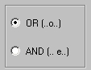

2 Scelta della composione dei valori di soglia
Scegliendo OR l'abilitazione automatica del pulsante "SI" avviene quando viene raggiunta una delle due soglie
Scegliendo AND l'abilitazione automatica del pulsante "SI" avviene solo se sono raggiunte tutte e due le soglie
